Grafika gier 3D od podstaw
Trójwymiarowe gry komputerowe już niemal od dwóch dekad rządzą się tymi samymi prawami. Spróbujemy zbudować minimalistyczny silnik 3D i zbadać podstawy jego działania.
1 Wprowadzenie
Tekst ten ma być tak prosty jak tylko to możliwe. Zarówno od strony programistycznej jak i matematycznej. W założeniu powinien być on zrozumiały dla bystrego dwunastolatka. Przynajmniej mam taką nadzieję.
W odróżnieniu od większości podobnych przewodników, skupimy się na podstawach, poczynając od pojedyńczych pikseli i trójkątów. Stworzymy całkowicie programowy silnik, bez pomocy OpenGL czy innych podobnych bibliotek. Ostatecznie będzie on wyświetlał ruchomy model łomu pobrany z pliku zewnętrznego z dodatkiem cieniowania płaskiego.
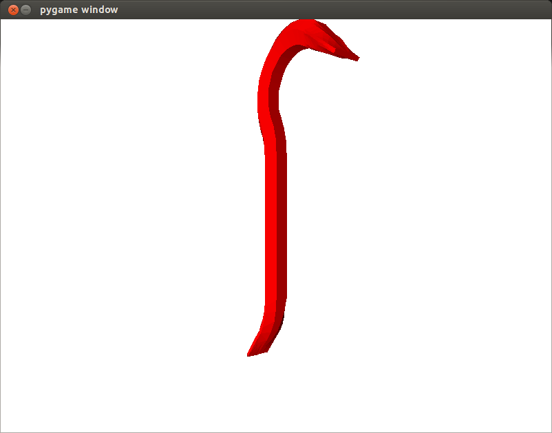
Nie będziemy się skupiać na operacjach na macierzach, tam gdzie nie jest to konieczne jak również nie będziemy zajmować się bardziej wymyślnymi rozwiązaniami w grafice 3D jak współrzędne jednorodne. Ludzie zajmujący się już tematyką grafiki 3D nie znajdą tutaj zapewne niczego ciekawago.
Całość powstanie w języku skryptowym Python. Wybór wydaje się mało sensowny dla silnika 3D, z uwagi na bardzo niską wydajność, ale przecież nie chodzi nam o wydajność a o prostotę i walory edukacyjne. Będziemy też unikać bardziej zaawansowanych elementów programowania jak klasy czy obiekty. Całość ma być zrozumiała nawet dla ludzi bez doświadczenia programistycznego, a kod ma się zamknąć w około 300 liniach i ma działać zarówno pod Linuksem jak i Windowsem.
Oprócz
Pythona (użyłem wersji 2.7) wykorzystamy też bibliotekę
PyGame, która pomoże nam wyłącznie w rysowaniu okna i wypełnianiu go pikseli. Python jest już zwykle domyślnie zainstalowany w większości dystrycucji, a PyGame można znaleźć w pakiecie
python-pygame.
Po otwarciu konsoli i wpisaniu wywołaniu w niej Pythona, możemy zacząć eksperymentować widząć na bieżąco wyniki naszych prac:
$ python
Python 2.7.4 (default, Jul 5 2013, 08:21:57) [GCC 4.7.3] on linux2 Type "help", "copyright", "credits" or "license" for more information.
>>>
Wychodzimy z interpretera wciskająć Ctrl-D. Możemy też zapisywać kod w plikać tekstowych i wywoływać je w następujący sposób:
$ python naszprogram.py
Na początek uruchomimy prosty program wyświetlający puste okno - umożliwi on sprawdzenie czy PyGame jest prawidłowo zainstalowane. Utwórzmy plik z rozszerzeniem *.py mający następującą treść:
import pygame
def main():
xw = 800
yw = 600
screen = pygame.display.set_mode((xw, yw))
running = True
while running:
for event in pygame.event.get(): #przerwanie petli
if event.type == pygame.QUIT:
running = False
main()
Warto zauważyć, że Python nie wykorzystuje nawiasów do zamykanie pętli (for, while), ani do instrukcji warunkowych (if). Jest za to wrażliwy na wcięcia. Proponuję używać czterech spacji jako wcięcia. Wiele edytorów tekstu ma też opcję umożliwiającą automatyczą konwersję tabulatorów na spacje. Poniżej ustawienia w edytorze gedit. Porada: wcięcia można powiększać zaznaczając cały blok tekstu i wciskając Tab i pomniejszać wciskając Ctrl-Tab.
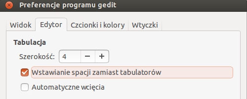
Najważniejszą częścią powyższego programu jest pętla while running:, która będzie tak długo jak długo zmienna running będzie miała wartość True (prawda). To wewnątrz niej będziemy wpisywać nasz kod. Dalej jest widoczna druga pętla monitorująca zdarzenia pochodzące od okna:
for event in pygame.event.get(): #przerwanie petli
if event.type == pygame.QUIT:
running = False
Gdy wciśniemy “krzyżyk” by zamknąć okno, to zmiennej running zostanie przypisana wartość False, czyli fałsz. Wtedy główna pętla (while running:) zostanie przerwana, bo running nie będzie już prawdą, i program zakończony.
Omówmy sobie też najważniejsze linie programu:
import pygame stąd Python wie, że ma uwzględniać moduł PyGame,
def main(): główna funkcja w programie, którą wywołujemy na końcu przez main(),
screen = pygame.display.set_mode((xw, yw)) korzystając z PyGame tworzymy okno o szerokości xw (tutaj 800 pikseli) i wysokości yw (600 pikseli).
2 Rzutowanie perspektywiczne
W grach stosowane jest rzutowanie perspektywiczne, odpowiadające rzeczywistości, gdzie dalsze obiekty wydają się mniejsze. W innych zastosowaniach, np. oprogramowanie CAD, można spotkać też rzutowanie równoległe, którym nie będziemy się tutaj zajmować.
Wyobraźmy sobie, że nie patrzymy na ekran komputera a na obiekt znajdujący się za oknem. Szyba tego okna jest odpowiednikiem naszego ekranu, którego nazywać też będziemy płaszczyzną rzutowania. Za oknem znajduje się kartonowe pudło. Bierzemy flamaster do ręki i zaczynamy zaznaczać na szybie punkty tak aby się pokrywały z wierzchołkami (narożnikami) pudła. Potem łączymy liniami narysowane punkty i ostatecznie zamalowujemy obszary zamknięte przez te linie. Właśnie utworzyliśmy na szybie rzut perspektywiczny naszego obiektu 3D (pudła).
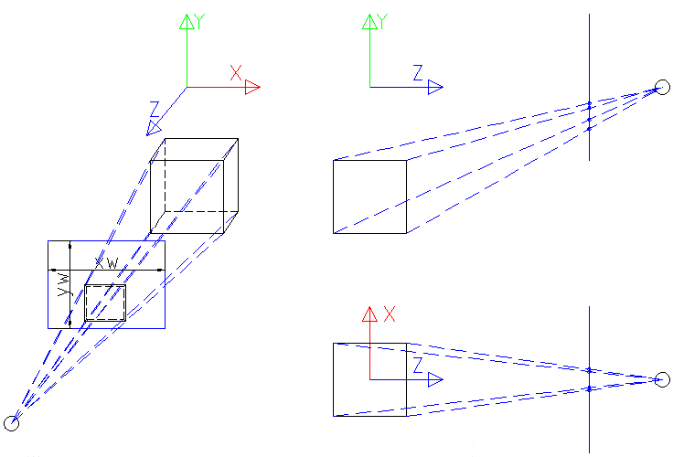
Rysunek powyżej przedstawia taką sytuację. Widzimy tam nasz sześcian, obserwatora (czarny okrąg) i płaszyznę rzutowania (nasze okno) pod postacią niebieskiego prostokątu. Do tego wprowadzimy układ współrządnych z X kierowanym w prawo, Y w górę i Z w kierunku obserwatora.
Po prawej stronie widzimy tę samą sytuację rozbitą na widoki: z boku (YZ) u z góry (XZ). Plaszczyzna rzutowania jest teraz widoczna jako niebieska linia, a w miejscu jej przecięcia z kreskowymi liniami, od obiektu do obserwatora, powstają rzutowane punkty. Tutaj ciekawostka, we wspominanym wcześniej rzutowaniu równoległym, linie kreskowe byłyby oczywiście równoległe.
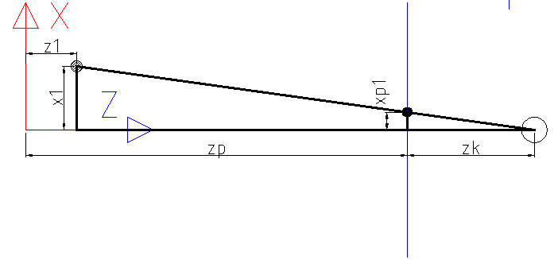
Będziemy musieli, znając współrzędne x, y, z, wyliczyć współrzędne (nazwijmy je xp i yp) położenie projekcji punktu na ekranie. Przyjrzyjmy się rysunkowi powyżej odpowiadającemu na widok z góry na nasz “świat”. Chcemy wyliczyć współrzędną poziomą projekcji xp1 mając współrzędne punktu w przestrzeni x1 i z1. Przyglądając się dokłądniej możemy zobaczyć dwa trójkąty prostkątne. Jeden o przyprostokątnych zk i xp1, drugi o przyprostokątnych zp + zk - z1 oraz x1. Wyjaśniając: zp to odległość od środka układu współrzędnych do płaszczyzny rzutowania, zk to odległość od tej płasczyzny do obserwatora. Potrzebną wielkość xp1 można wyliczyć z proporcji dwóch trójkątów:
xp1 = x1⋅(zk)/(zp + zk − z1)
Analogicznie będzie dla wpółrzędnej y projekcji:
yp1 = y1⋅(zk)/(zp + zk − z1)
Zapiszemy to w naszym kodzie jako:
xp = zk * x /(zp + zk - z) #wyliczenie projekcji dla x-ów
yp = zk * y /(zp + zk - z) #wyliczenie projekcji dla y-ów
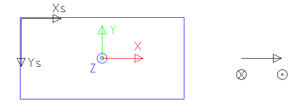
Trzeba ominąć jeszcze jedną pułapkę. Współrzędne okna (nazwane powyżej xs, ys) mają początek w lewym górnym narożniku i nie są spójne z wprowadzonym wcześniej układem. Trzeba dokonać konwersji, przy okazji mnożąc wartości przez jakąś skalę. Skala będzie mówić ilu pikselom ekranowym odpowiada jednostka w przestrzeni 3D.
xps1 = (xw)/(2) + xp1⋅skala
yps1 = (yw)/(2) − yp1⋅skala
W kodzie:
xps = int((xw / 2) + (xp * skala)) #wysrodkowanie, skalowanie oraz konwersja do liczby całkowitej
yps = int((yw / 2) - (yp * skala)) #wysrodkowanie, skalowanie i odwrócenie y oraz konwersja do liczby całkowitej
Warto zwrócić uwagę na konwersję z liczby zmiennoprzecinkowej do całkowitej za pomocą int(). Położenie piksela musi być określone liczbami całkowitymi.
Wyświetlanie wierzchołków
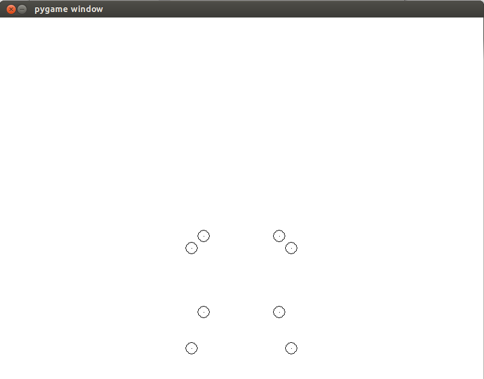
Utwórzmy program wyświetlający projekcję wierzchołków sześcianu jak na powyższym zrzucie ekranu. Poniżej znajduje się pełny listing kodu.
#!/usr/bin/python
# -*- coding: utf-8 -*-
import pygame, math, sys
def main():
xw = 800
yw = 600
screen = pygame.display.set_mode((xw, yw))
fizxw = 2.0 #"fizyczna" (w jednostach przestrzeni 3D) szerokość okna widzenia
fov = math.radians(75) #określenie szerokości pola widzenia
zp = 6.0 #odległość od środka układu współrzędnych do "ekranu"
zk = fizxw / (2 * math.tan(fov / 2)) #odległość od "ekranu" do obserwatora
skala = int(xw / fizxw) #skala n pikseli na 1 jednostkę przestrzeni
background_colour = (255,255,255)
screen.fill(background_colour)
p0 = (1.0, -3.0, 1.0) #punkt pierwszy - krotka, w odróżnieniu od listy niezmienna, 1.0, bo liczba zmiennoprzecinkowa
p1 = (1.0, -1.0, 1.0)
p2 = (-1.0, -3.0, 1.0)
p3 = (-1.0, -1.0, 1.0)
p4 = (1.0, -3.0, -1.0)
p5 = (1.0, -1.0, -1.0)
p6 = (-1.0, -3.0, -1.0)
p7 = (-1.0, -1.0, -1.0)
chmura = (p0, p1, p2, p3, p4, p5, p6, p7) #zebranie wszystkich krotek do jednej nadrzędnej
running = True #start głównej pętli programu
while running:
screen.fill(background_colour) #czyszczenie klatki
for i in range(0, len(chmura)): #pętla 8-elementowa, 0-7, bo ostatnia jest pomijana, len - dlugosc
print i
punkt = chmura[i] #wybranie kolejnej krotki z nadrzędnej
print punkt
x = punkt[0] #wybrana pierwsza współrzedna
y = punkt[1]
z = punkt[2]
xp = zk * x /(zp + zk - z) #wyliczenie projekcji dla x-ów
yp = zk * y /(zp + zk - z) #wyliczenie projekcji dla y-ów
xps = int((xw / 2) + (xp * skala)) #wyśrodkowanie, skalowanie oraz konwersja do liczby całkowitej
yps = int((yw / 2) - (yp * skala)) #wyśrodkowanie, skalowanie i odwrocenie y oraz konwersja do liczby całkowitej
print "x"+str(xps) #wypisanie wartości w konsoli
print "y"+str(yps)
screen.set_at((xps, yps), (0, 0, 0)) #narysowanie punktu w zadanym miejscu
pygame.draw.circle(screen, (0, 0, 0), (xps, yps), 10, 1) #obrysowanie punktów okręgami dla lepszej widoczności
pygame.display.flip()
for event in pygame.event.get(): #przerwanie pętli
if event.type == pygame.QUIT:
running = False
main()
Omówmy jego działanie krok po kroku. Najpierw wypełniony został cały ekran kolorem białym:
background_colour = (255,255,255)
screen.fill(background_colour)
Trzy następujące się liczby to składowe (liczby całkowite 0 - 255): kolor czerwony, zielony i niebieski.
Należało wprowadzić współrzędne (x, y, z) dla każdego z wierzchołków:
p0 = (1.0, -3.0, 1.0)
Są one reprezentowane za pomocą trzech liczb zmiennoprzecinkowych, Python liczbę „z przecinkiem“ automatycznie traktuje jako zmiennoprzecinkową, zebranych do krotki. Krotka to struktura danych pozwalająca zbierać kilka zmiennych różnych typów (np. liczba całkowita, ciąg znaków), ale w odróżnieniu od listy nie może być modyfikowana po utworzeniu. Krotki w Pythonie zbudowane są z użyciem nawiasów okrągłych (), listy z użyciem nawiasów kwadratowych [].
Dalej zbieramy wszystkie wierzchołki od p0 do p7 w jedną wspólną krotkę nazwaną chmura:
chmura = (p0, p1, p2, p3, p4, p5, p6, p7)
Tu warto wspomnieć, że wszystko można by zrobić w jednym przypisaniu:
chmura = ((1.0, -3.0, 1.0), (1.0, -1.0, 1.0), (-1.0, -3.0, 1.0), (-1.0, -1.0, 1.0), (1.0, -3.0, -1.0), (1.0, -1.0, -1.0), (-1.0, -3.0, -1.0), (-1.0, -1.0, -1.0))
Wewnątrz głównej pętli programu tworzymy podrzędną, której każde przejście będzie odpowiadało za narysowaniu punktu piksela postałego w wyniku projekcji każdego kolejnego wierzchołka:
for i in range(0, len(chmura)):
punkt = chmura[i]
x = punkt[0]
y = punkt[1]
z = punkt[2]
len zwraca długość zmiennej, w tym przypadku, dla naszej krotki będzie to 8. Pętla zostanie wykonana dla i równego 0, 1, 2, 3, 4, 5, 6 i 7. zobaczmy przypadek, gdy i równa się 3. Z krotki chmura zostanie wybrany czwarty element (bo są numerowane od 0, nie od 1), czyli czwarty wierzchołek, i zmienna punkt będzie wtedy równa (-1.0, -1.0, 1.0). Następnie kolejnym współrzędnym x, y, z, zostanie przypisamy pierwszy [0], drugi [1] i trzeci [2] element krotki punkt, czyli x = -1.0, y = 0.0, z = 1.0.
Dalej mamy wyliczenie projekcji, które zostało omówione wyżej. Przy okazji wypisuję wartości niektórych zmiennych do konsoli używając print. To nie jest konieczne, ale potrafi być przydatne, gdy program nie działa prawidłowo i szuka się błędu. Ostatecznie wstawiam czarny piksel w zaadanym miejscu:
screen.set_at((xps, yps), (0, 0, 0))
Oraz, już po wyjściu z pętli for, dokonuję wyświetlenia tego co narysowałem:
pygame.display.flip()
Przy okazji pojawił się kod rysujący okręgi - tak wysokopoziomowe funkcje nie będą nam ostatecznie potrzebne. Tutaj został tylko wykorzystany by położenie wierzchołków było lepiej widoczne.
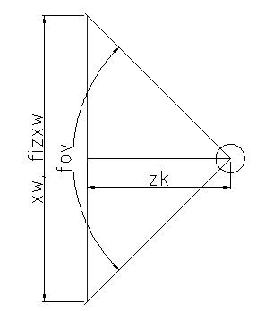
Dodatkowo, na początku programu wprowadziłem odległość (zk) obserwator - płaszczyzna rzutowania zależną od kąta widzenia (fov):
fov = math.radians(75)
zk = fizxw / (2 * math.tan(fov / 2))
Pierwsza linia to konwersja ze stopni na, używane przez Pythona, radiany. Drugą można wyprowdzić z wykorzystaniem odrobiny trygonometrii:
(0, 5⋅fizxw)/(zk) = tan⎛⎝(fov)/(2)⎞⎠
0, 5⋅fizxw = zk⋅tan⎛⎝(fov)/(2)⎞⎠
zk = (0, 5⋅fizxw)/(tan⎛⎝(fov)/(2)⎞⎠) = (fizxw)/(2⋅tan⎛⎝(fov)/(2)⎞⎠)
Model drutowy, trójkąty
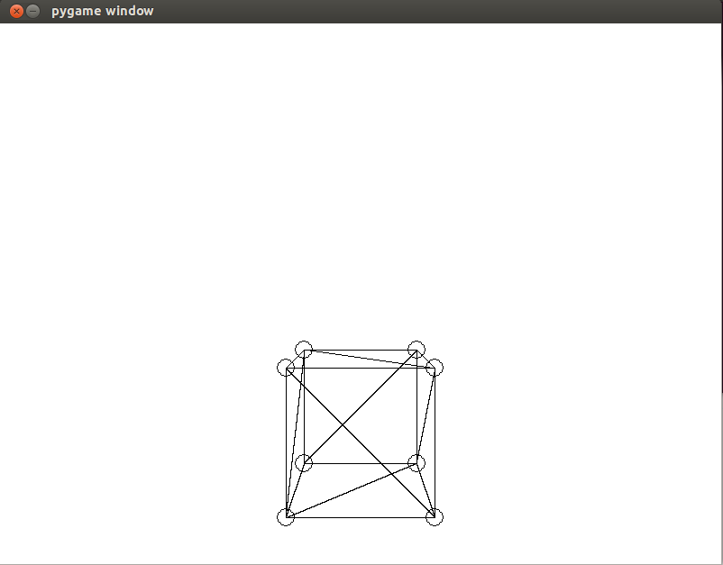
#!/usr/bin/python
# -*- coding: utf-8 -*-
import pygame, math, sys
def main():
xw = 800
yw = 600
screen = pygame.display.set_mode((xw, yw))
fizxw = 2.0 #"fizyczna" (w jednostach przestrzeni 3D) szerokość okna widzenia
fov = math.radians(75) #określenie szerokości pola widzenia
zp = 6.0 #odległość od środka układu współrzędnych do "ekranu"
zk = fizxw / (2 * math.tan(fov / 2)) #odległość od "ekranu" do obserwatora
skala = int(xw / fizxw) #skala n pikseli na 1 jednostkę przestrzeni
background_colour = (255,255,255)
screen.fill(background_colour)
p0 = (1.0, -3.0, 1.0) #punkt pierwszy - krotka, w odróżnieniu od listy niezmienna, 1.0, bo liczba zmiennoprzecinkowa
p1 = (1.0, -1.0, 1.0)
p2 = (-1.0, -3.0, 1.0)
p3 = (-1.0, -1.0, 1.0)
p4 = (1.0, -3.0, -1.0)
p5 = (1.0, -1.0, -1.0)
p6 = (-1.0, -3.0, -1.0)
p7 = (-1.0, -1.0, -1.0)
chmura = (p0, p1, p2, p3, p4, p5, p6, p7) #zebranie wszystkich krotek do jednej nadrzędnej
troj0 = (0, 1, 3) #indeks wierzchołków wybranych z krotki "chmura, dal pierwszego trójkąta, + indeks kolor
troj1 = (0, 3, 2)
troj2 = (2, 3, 7)
troj3 = (2, 7, 6)
troj4 = (4, 1, 0)
troj5 = (1, 4, 5)
troj6 = (1, 7, 3)
troj7 = (1, 5, 7)
troj8 = (4, 0, 2)
troj9 = (4, 2, 6)
troj10 = (5, 4, 6)
troj11 = (5, 6, 7) #na szesciobok potrzeba 12 trójkątów
zbiortroj = (troj0, troj1, troj2, troj3, troj4, troj5, troj5, troj7, troj8, troj9, troj10, troj11)
#alternatywnie zbiortroj = ((0, 1, 3), (0, 2, 3), itd)
running = True #start głównej pętli programu
while running:
screen.fill(background_colour) #czyszczenie klatki
for tr in range(0, len(zbiortroj)): #pętla 12-elemetowa, 0-11, bo ostania jest pomijana, len - długość
trojkat = zbiortroj[tr]
xps = [0, 0, 0] #tymczasowa lista punktów [] to listy, () to krotki
yps = [0, 0, 0]
for i in range (0, 3):
numerpunktu = trojkat[i] #pobranie indeksu punktu, "zbiortroj" ma wskazywac kolejne punkty z "chmura"
punkt = chmura[numerpunktu] #wybranie kolejnej krotki z krotki "chmura"
x = punkt[0] #wybrana pierwsza współrzedna
y = punkt[1]
z = punkt[2]
xp = zk * x /(zp + zk - z) #wyliczenie projekcji dla x-ów
yp = zk * y /(zp + zk - z) #wyliczenie projekcji dla y-ów
xps[i] = int((xw / 2) + (xp * skala)) #wysrodkowanie, skalowanie oraz konwersja do liczby całkowitej
yps[i] = int((yw / 2) - (yp * skala)) #wysrodkowanie, skalowanie i odwrócenie y oraz konwersja do liczby całkowitej
screen.set_at((xps[i], yps[i]), (0, 0, 0)) #narysowanie punktu w zadanym miejscu
pygame.draw.circle(screen, (0, 0, 0), (xps[i], yps[i]), 10, 1) #obrysowanie punktów okręgami dla lepszej widoczności
pygame.draw.line(screen, (0, 0, 0), (xps[0], yps[0]), (xps[1], yps[1]), 1)#rysuj linię łączącą punkty
pygame.draw.line(screen, (0, 0, 0), (xps[1], yps[1]), (xps[2], yps[2]), 1)#rysuj linię łączącą punkty
pygame.draw.line(screen, (0, 0, 0), (xps[2], yps[2]), (xps[0], yps[0]), 1)#rysuj linię łączącą punkty
pygame.display.flip()
for event in pygame.event.get(): #przerwanie pętli
if event.type == pygame.QUIT:
running = False
main()
Kolejnym etapem jest podział naszego sześcianu na wielokąty. Będą to najprostsze możliwe wielokąty, czyli trójkąty, co ułatwi nam pracy na póżniejszym etapie, gdy będziemy budować rasteryzer. Każda ściana sześcianu zostanie podzielona na dwa trójkąty.
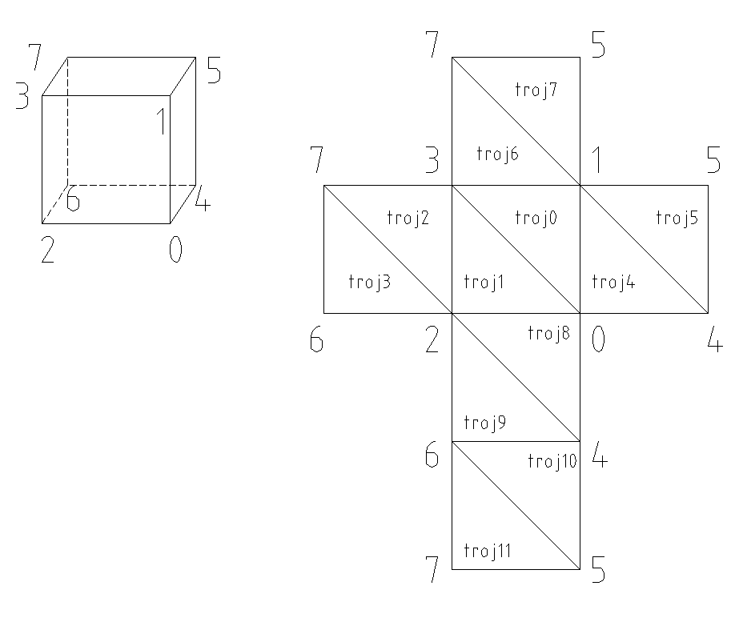
Trójkąt zdefiniowany jest za pomocą trzech wierzchołków, ale zamiast ich współrzednych zostały zapisane pozycje w wcześniej zdefiniowanym zbiorze wierzchołków chmura:
troj0 = (0, 1, 3)
Według powyższego kodu, pierwszy trójkąt wykorzystuje wierzchołki o numerach 0, 1 i 3, czyli (1.0, -3.0, 1.0), (1.0, -1.0, 1.0) i (-1.0, -1.0, 1.0). Zrobiłem to w ten sposób, dlatego, że te same wierzchołki są wykorzystywane w wielu trójkątach. Mamy 12 trójkątów, każdy po 3 wierzchołki, co daje aż 36 wierchołków. Większość się pokrywa, dzięki czemu potrzebujemy tylko 8, nie 36.
Dla każdego trójkąta wykonywana jest następująca pętla:
for i in range (0, 3):
numerpunktu = trojkat[i]
punkt = chmura[numerpunktu]
x = punkt[0]
y = punkt[1]
z = punkt[2]
Wewnątrz tej pętli, dla każdego z wierzchołków trójkąta, odczytywane są współrzędne x, y i z. Dodatkową różnicą w stosunku do poprzedniego kodu jest wprowadzenie trójelementowych list, które będą zapisywać położenie projekcji wszystkich trzech wierzchołków:
xps = [0, 0, 0]
yps = [0, 0, 0]
xps[i] = int((xw / 2) + (xp * skala))
yps[i] = int((yw / 2) - (yp * skala))
Listy te są odczytywane już po wyjściu z wyżej opisywanej pętli i wykorzystywane do rysowania krawędzi łączących wierzchołki trójkąta (0 z 1, 1 z 2, 2 z 0):
pygame.draw.line(screen, (0, 0, 0), (xps[0], yps[0]), (xps[1], yps[1]), 1)
pygame.draw.line(screen, (0, 0, 0), (xps[1], yps[1]), (xps[2], yps[2]), 1)
pygame.draw.line(screen, (0, 0, 0), (xps[2], yps[2]), (xps[0], yps[0]), 1)
Poszliśmy tu nieco na skróty wykorzystując wbudowaną funkcję PyGame. Silniki gier nie działały zwykle w ten sposób, a implementowały własne rasteryzatory linii, które składały linie z pojedyńczych pikseli. Przykładem może tu być
algorytm Brasenhama.
3 Rasterizer trójkąta
Rasteryzacja pojedyńczego trójkąta
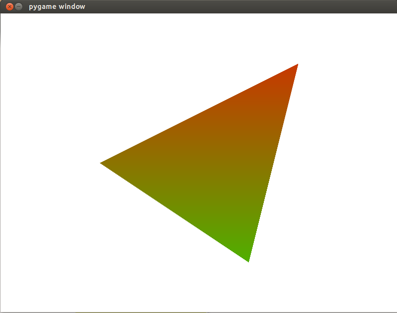
#!/usr/bin/python
# -*- coding: utf-8 -*-
import pygame, math, sys
def main():
xw = 800
yw = 600
screen = pygame.display.set_mode((xw, yw))
background_colour = (255,255,255)
screen.fill(background_colour)
running = True
while running:
xps0 = 600 #od lewej do prawej
yps0 = 100 #z góry na dół
zf0 = -10.0 #głębość Z w float
xps1 = 200 #współrzedne wierzchołków trojkąta od najmwyzsze (najmniejsze y) do najniższego
yps1 = 300
zf1 = -7.0
# xps1 = 600
# yps1 = 300
xps2 = 500
yps2 = 500
zf2 = -4.0
dx10 = xps1 - xps0
dx21 = xps2 - xps1
dx20 = xps2 - xps0
dy10 = yps1 - yps0
dy21 = yps2 - yps1
dy20 = yps2 - yps0
dzf10 = zf1 - zf0
dzf21 = zf2 - zf1
dzf20 = zf2 - zf0
dwyp10 = math.sqrt(float(math.pow(dx10,2)+math.pow((dy10),2))) #początkowa odległosć między punktami na XY dla 10
dwyp21 = math.sqrt(float(math.pow(dx21,2)+math.pow((dy21),2)))
dwyp20 = math.sqrt(float(math.pow(dx20,2)+math.pow((dy20),2)))
zprop10 = dzf10 / dwyp10 #proporcja przesunięcia XY dla 10 do przesunięcia Z do użycia na krawędziach trójkąta
zprop21 = dzf21 / dwyp21
zprop20 = dzf20 / dwyp20
#rasterizer buduje trójkąty z linii poziomych
if ((float(dx10) / float(dy10)) < (float(dx20) / float(dy20))):#przypadek gdy 1 jest po lewej 0-2
for y in range(yps0, yps2):
if y < yps1: #gdy jest się między 0 a 1
x0 = xps0 + (y-yps0) * dx10 / dy10
x1 = xps0 + (y-yps0) * dx20 / dy20
dwyp = math.sqrt(float(math.pow(xps1 - x0,2)+math.pow((yps1 - y),2))) #x0 i y podąza między punktami 1 i 0
z0 = zf1 - dwyp * zprop10 #z każdym krokiem mniejsza odległośc, to coraz mniej odejmowane od punktu końcowego zf1
dwyp = math.sqrt(float(math.pow(xps2 - x1,2)+math.pow((yps2 - y),2))) #x1 i y podąza między 2 i 0
z1 = zf2 - dwyp * zprop20
else: #gdy jest się między 1 a 2
x0 = xps1 + (y-yps1) * dx21 / dy21
x1 = xps0 + (y-yps0) * dx20 / dy20
dwyp = math.sqrt(float(math.pow(xps2 - x0,2)+math.pow((yps2 - y),2))) #x0 i y podąza między 2 i 1
z0 = zf2 - dwyp * zprop21
dwyp = math.sqrt(float(math.pow(xps2 - x1,2)+math.pow((yps2 - y),2))) #x1 i y podąza między 2 i 0
z1 = zf2 - dwyp * zprop20
for x in range(x0, x1):
if x >=0 and x < xw and y >=0 and y < yw: #ograniczenie tylko do obszaru ekranu
#screen.set_at((x, y), (0, 0, 0))
z = z1 - ((z1 - z0) / float(x1 - x0)) * float(x1 - x)
screen.set_at((x, y), (int(abs(z * 20)), 255 - int(abs(z * 20)), 0)) #test kolorem zaleznym od z
else:
for y in range(yps0, yps2):
if y < yps1: #gdy jest się między 0 a 1
x1 = xps0 + (y-yps0) * dx10 / dy10 #zamiana początku z koncem w tym przypadku
x0 = xps0 + (y-yps0) * dx20 / dy20
dwyp = math.sqrt(float(math.pow(xps1 - x1,2)+math.pow((yps1 - y),2))) #x1 i y podąza między punktami 1 i 0
z1 = zf1 - dwyp * zprop10 #z każdym krokiem mniejsza odległośc, to coraz mniej odejmowane od punktu końcowego zf1
dwyp = math.sqrt(float(math.pow(xps2 - x0,2)+math.pow((yps2 - y),2))) #x0 i y podąza między 2 i 0
z0 = zf2 - dwyp * zprop20
else: #gdy jest się między 1 a 2
x1 = xps1 + (y-yps1) * dx21 / dy21
x0 = xps0 + (y-yps0) * dx20 / dy20
dwyp = math.sqrt(float(math.pow(xps2 - x1,2)+math.pow((yps2 - y),2))) #x1 i y podąza między 2 i 1
z1 = zf2 - dwyp * zprop21
dwyp = math.sqrt(float(math.pow(xps2 - x0,2)+math.pow((yps2 - y),2))) #x0 i y podąza między 2 i 0
z0 = zf2 - dwyp * zprop20
for x in range(x0, x1):
if x >=0 and x < xw and y >=0 and y < yw: #ograniczenie tylko do obszaru ekranu
#screen.set_at((x, y), (0, 0, 0))
z = z1 - ((z1 - z0) / float(x1 - x0)) * float(x1 - x)
screen.set_at((x, y), (int(abs(z * 20)), 255 - int(abs(z * 20)), 0)) #test kolorem zaleznym od z
for event in pygame.event.get(): #przerwanie pętli
if event.type == pygame.QUIT:
running = False
pygame.display.flip()
main()
Mając projekcje wierzchołków trójkąta musimy wypełnić jego obszar pikselami. Proces ten nazywa się rasteryzacją i polega na przedstawieniu figury płaskiej za pomocą skończonej licznby elementów (pikseli). Napiszmy prosty program do rateryzacji pojedyńczego trójkąta.
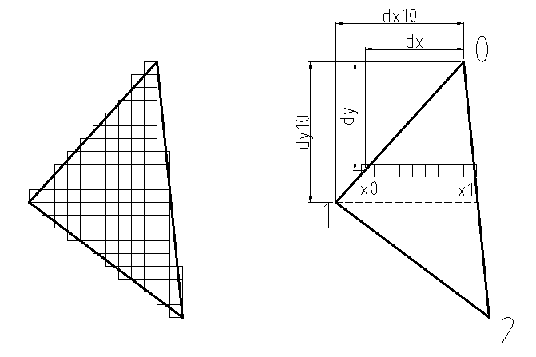
Będziemy składać trójkąty z poziomych odcinków rysowanych w kolejności od góry do dołu ekranu. Każdy z tych odcinków zbudowany jest z pikseli wstawianych od lewej (punkt x0) do prawej (punkt x1).
Zakładamy, że wierzchołki „0“, „1“ i „2“ są numerowane od góry. Trójkąt należy podzielić na dwa mniejsze za pomocą poziomemej linii (kreskowa na rysunku) przechodzącej przez wierzchołek „1“.
Górny trójkąt:
Wyliczamy x0 znajdujące się na linii 0-1 oraz x1 znajdujące się na linii 0-2:
x0 = xps0 + (y-yps0) * dx10 / dy10
x1 = xps0 + (y-yps0) * dx20 / dy20
y jest znane i w pierwszym kroku równe yps0, czyli współrzędnej wierzchołka „0“. Z każdym przejściem y zostaje zwiększone o 1, co odpowiada kolejnemu (położonemu niżej) odcinkowi.
Podobny proces będzie zachodził dla dolnego trójkąta:
Wyliczamy x0 znajdujące się na linii 1-2 oraz x1 znajdujące się na linii 0-2:
x0 = xps1 + (y-yps1) * dx21 / dy21
x1 = xps0 + (y-yps0) * dx20 / dy20
Ostatnią częścią jest narysowanie pikseli z których zbudowany jest poziomy odcinek (druga linia sprawdza też czy punkt znajduje się w obszarze ekranu):
for x in range(x0, x1):
if x >=0 and x < xw and y >=0 and y < yw:
screen.set_at((x, y), (0, 0, 0))
Pozostaje jeszcze jeden problem, a mianowicie współrzędna z. Nie przejmowaliśmy się nią przy modelu drutowym, ale teraz, gdy wypełnianiane są całe powierzchnie musimy sprawdzać ich głębokość. Ostatecznie będziemy wyświetlać tylko te piksele, które odpowiadają punktom znajduącym się najbliżej obserwatora.
Załóżmy, że chcemy wyliczyć współrzędną z0 punktu znajdującego się na odcinku między wierzchołkami „0“ i „1“. Mamy współrzędne wierzchołka „0“, czyli (xps0, yps0 i zf0), współrzedne wierzchołka 1 (xps1, yps1 i zf1), odległości wzdłuż osi x i y między tymi wierzchołkami (dx10 i dy20) oraz dwie współrzędne naszego punktu (x0 i y). Za znalezienie z0 odpowiada:
dzf10 = zf1 - zf0
dwyp10 = math.sqrt(float(math.pow(dx10,2)+math.pow((dy10),2)))
zprop10 = dzf10 / dwyp10
dwyp = math.sqrt(float(math.pow(xps1 - x0,2)+math.pow((yps1 - y),2)))
z0 = zf1 - dwyp * zprop10
Co jest zapisem równania:
z0 = zf1 − √((xps1 − x0)2 + (yps1 − y)2)⋅(zf1 − zf0)/(√(dx102 + dy202))
Lub inaczej:
z0 = zf1 − (√((xps1 − x0)2 + (yps1 − y)2))/(√(dx102 + dy202))⋅(zf1 − zf0)
gdzie:
√(dx102 + dy202) to odległość między wierzchołkami „0“ i „1“ na płaszczyźnie XY
√((xps1 − x0)2 + (yps1 − y)2) odległość od wierzchołka „1“ punktu, którego współrzędnej z0 szukamy.
Wyliczając w ten sam sposób z1, możemy poznać współrzędną z dla każdego punktu poziomego odcinka, dla którego znamy x i y:
z = z1 - ((z1 - z0) / float(x1 - x0)) * float(x1 - x)
Nasz przykładowy program zmienia kolor piksela w zależoności od współrzędnej z punktu, któremu ten piksel odpowiada:
screen.set_at((x, y), (int(abs(z * 20)), 255 - int(abs(z * 20)), 0))
Ten prosty test powala stwierdzić czy rasteryzer działa prawidłowo. Na zrzucie ekranu widoczne jest płynne przejście pomiędzy kolorami, co oznacza, że z zmienia się płynnie.
Omówimy przypadek, gdy wierzchołek „1“ znajduje się po lewej stronie odcinka 0-2, ale kod będzie musiał też uwzględnić odmienną sytuację. Za sprawdzenie z którą sytuacją mamy do czynienie odpowiada kod:
if ((float(dx10) / float(dy10)) < (float(dx20) / float(dy20)))
Konwersja (float()) typów z liczb całkowitych na zmiennoprzecinkowe została wykonana w celu zwiększenia precyzji dzielenia.
Projekcja i rasteryzacja bryły
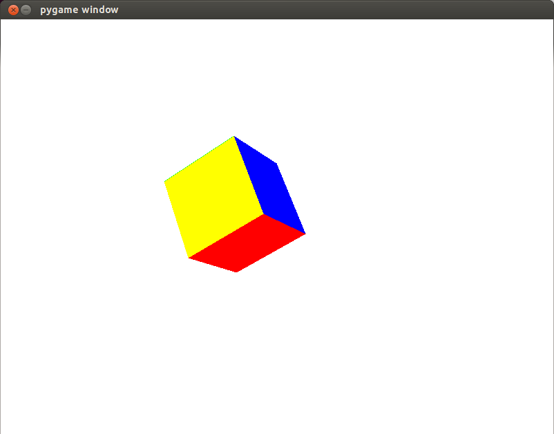
#!/usr/bin/python
# -*- coding: utf-8 -*-
import pygame, math, sys
def main():
xw = 800
yw = 600
screen = pygame.display.set_mode((xw, yw))
lipx = xw * yw #całkowita liczba pikseli
fizxw = 2.0 #"fizyczna" (w jednostach przestrzeni 3D) szerokość okna widzenia
fov = math.radians(75) #określenie szerokosci pola widzenia
zp = 7.0 #odległość od środka układu współrzednych do "ekranu"
zk = fizxw / (2 * math.tan(fov / 2)) #odległość od "ekranu" do obserwatora
skala = int(xw / fizxw) #skala n pikseli na 1 jednostkę przestrzeni
bufram = [] #z-bufor
for i in range(0, lipx):
bufram.append(-100000.0) #tworzenie nowej czystej listy dla koloru głębi z (float)
background_colour = (255,255,255)
screen.fill(background_colour)
p0 = (1.0, -3.0, 1.0) #punkt pierwszy - krotka, w odróżnieniu od listy niezmienna, 1.0, bo liczba zmiennoprzecinkowa
p1 = (1.0, -1.0, 1.0)
p2 = (-1.0, -3.0, 1.0)
p3 = (-1.0, -1.0, 1.0)
p4 = (1.0, -3.0, -1.0)
p5 = (1.0, -1.0, -1.0)
p6 = (-1.0, -3.0, -1.0)
p7 = (-1.0, -1.0, -1.0)
chmura = (p0, p1, p2, p3, p4, p5, p6, p7) #zebranie wszystkich krotek do jednej nadrzędnej
zbiorkolor = ((0, 0, 255), (0, 255, 0), (255, 0, 0), (0, 255, 255), (255, 255, 0), (255, 0, 255))
troj0 = (0, 1, 3, 0) #indeks wierzchołków wybranych z krotki "chmura, dal pierwszego trójkąta, + indeks kolor
troj1 = (0, 3, 2, 0)
troj2 = (2, 3, 7, 1)
troj3 = (2, 7, 6, 1)
troj4 = (4, 1, 0, 2)
troj5 = (1, 4, 5, 2)
troj6 = (1, 7, 3, 3)
troj7 = (1, 5, 7, 3)
troj8 = (4, 0, 2, 4)
troj9 = (4, 2, 6, 4)
troj10 = (5, 4, 6, 5)
troj11 = (5, 6, 7, 5) #na szesciobok potrzeba 12 trójkątów
zbiortroj = (troj0, troj1, troj2, troj3, troj4, troj5, troj6, troj7, troj8, troj9, troj10, troj11)
running = True #start główeje pętli programu
krok = 0
while running:
screen.fill(background_colour) #czyszczenie klatki
for i in range(0, lipx):
bufram[i] = -100000.0 # wypełnianie Z bufora bardzo małymi wartościami Z (daleko od obserwatora)
for tr in range(0, len(zbiortroj)): #pętla 12-elementowa, 0-11, bo ostania jest pomijana, len - długość
trojkat = zbiortroj[tr]
#print trojkat
xps = [0, 0, 0] #tymczasowa lista punktów [] to listy, () to krotki
yps = [0, 0, 0]
zf = [0.0, 0.0, 0.0]
for i in range (0, 3):
numerpunktu = trojkat[i] #pobranie indeksu punktu, "zbiortroj" ma wkazywac kolejne punkty z "chmura"
punkt = chmura[numerpunktu] #wybranie kolejnej krotki z krotki "chmura"
x = punkt[0] #wybrany pierwsza współrzedna
y = punkt[1]
z = punkt[2]
x, y, z = transformacja(x, y, z, krok) #wywołanie funcji transformacji
xp = zk * x /(zp + zk - z) #wyliczenie projekcji dla x-ów
yp = zk * y /(zp + zk - z) #wyliczenie projekcji dla y-ów
#skala = 100 #skala 100 pikseli na 1 jednostkę przestrzeni
xps[i] = int((xw / 2) + (xp * skala)) #wysrodkowanie, skalowanie oraz konwersja do liczby całkowitej
yps[i] = int((yw / 2) - (yp * skala)) #wysrodkowanie, skalowanie i odwrócenie y oraz konwersja do liczby całkowitej
zf[i] = z
kolortrojk = zbiorkolor[trojkat[3]] #czwarty zrgument trojkata to kolor
#print [xps[0], yps[0], zf[0]], [xps[1], yps[1], zf[1]], [xps[2], yps[2], zf[2]], kolortrojk
bufram = rysujtrojk([xps[0], yps[0], zf[0]], [xps[1], yps[1], zf[1]], [xps[2], yps[2], zf[2]], kolortrojk , xw, yw, screen, bufram, zp) #wywołanie rasterizera trójkąta ze zwrotem z-bufora
pygame.display.flip()
krok = krok + 1
for event in pygame.event.get(): #przerwanie pętli
if event.type == pygame.QUIT:
running = False
def rysujtrojk(wierz0, wierz1, wierz2, kolortrojk, xw, yw, screen, bufram, zp): #rasterizer trójkątów
while 1: #prosty algorytm sortowania 3 elementów
if wierz0[1] > wierz1[1]:
wierztemp = wierz0
wierz0 = wierz1
wierz1 = wierztemp
if wierz1[1] > wierz2[1]:
wierztemp = wierz1
wierz1 = wierz2
wierz2 = wierztemp
if wierz0[1] <= wierz1[1] and wierz1[1] <= wierz2[1]: #przerwanie gdy uporządkowane rosnąco wg 2 elementu
break
#print wierz0, wierz1, wierz2
xps0 = wierz0[0] #od lewej do prawej
yps0 = wierz0[1] #z góry na dół
zf0 = wierz0[2] #głębość Z w float
xps1 = wierz1[0] #współrzedne wierzchołków trojkąta od najmwyzsze (najmniejsze y) do najniższego
yps1 = wierz1[1]
zf1 = wierz1[2]
xps2 = wierz2[0]
yps2 = wierz2[1]
zf2 = wierz2[2]
dx10 = xps1 - xps0
dx21 = xps2 - xps1
dx20 = xps2 - xps0
dy10 = yps1 - yps0
dy21 = yps2 - yps1
dy20 = yps2 - yps0
dzf10 = zf1 - zf0
dzf21 = zf2 - zf1
dzf20 = zf2 - zf0
if dx10 != 0 or dy10 != 0:
dwyp10 = math.sqrt(float(math.pow(dx10,2)+math.pow((dy10),2))) #początkowa odległosć między punktami na XY dla 10
zprop10 = dzf10 / dwyp10 #proporcja przesunięcia XY dla 10 do przesunięcia Z do użycia na krawędziach trójkąta
else:
zprop10 = 0
if dx21 != 0 or dy21 != 0:
dwyp21 = math.sqrt(float(math.pow(dx21,2)+math.pow((dy21),2)))
zprop21 = dzf21 / dwyp21
else:
zprop21 = 0
if dx20 != 0 or dy20 != 0:
dwyp20 = math.sqrt(float(math.pow(dx20,2)+math.pow((dy20),2)))
zprop20 = dzf20 / dwyp20
else:
zprop20 = 0
#rasterizer buduje trójkąty z linii poziomych
lewy = False #pomocnicza zmienna, jeśli true, to 1 jest po lewej 0-2
if dy10 != 0 and dy21 != 0 and dy20 != 0: #tylko gdy y są różne, bez dzielenia przez 0
if ((float(dx10) / float(dy10)) < (float(dx20) / float(dy20))):#przypadek gdy 1 jest po lewej 0-2, konwersja int do float dla wyzszej dokładności porównania
lewy = True
else:
lewy = False
elif dy10 == 0 and dy21 != 0 and dy20 != 0: #gdy poziomo miedzy 0-1
if dx10 < 0:
lewy = True
else:
lewy = False
elif dy10 != 0 and dy21 == 0 and dy20 != 0: #gdy poziomo miedzy 2-1
if dx21 > 0:
lewy = True
else:
lewy = False
else: #zwykle gdy poziomo miedzy 2-0, to 1-0 i 2-1, linia prosta pozioma
if dx20 > 0:
lewy = True
else:
lewy = False
if (lewy == True):#przypadek gdy 1 jest po lewej 0-2
for y in range(yps0, yps2):
if y < yps1: #gdy jest się między 0 a 1
if dy10 != 0:
x0 = xps0 + (y-yps0) * dx10 / dy10 #x0 zawsze po lewej w stosunku do x1
else:
x0 = xps1
if dy20 != 0:
x1 = xps0 + (y-yps0) * dx20 / dy20
else:
x1 = xps0
dwyp = math.sqrt(float(math.pow(xps1 - x0,2)+math.pow((yps1 - y),2))) #x0 i y podąza między punktami 1 i 0
z0 = zf1 - dwyp * zprop10 #z każdym krokiem mniejsza odległośc, to coraz mniej odejmowane od punktu końcowego zf1
dwyp = math.sqrt(float(math.pow(xps2 - x1,2)+math.pow((yps2 - y),2))) #x1 i y podąza między 2 i 0
z1 = zf2 - dwyp * zprop20
#print x0, y, z0
else: #gdy jest się między 1 a 2
if dy21 != 0:
x0 = xps1 + (y-yps1) * dx21 / dy21
else:
x0 = xps1
if dy20 != 0:
x1 = xps0 + (y-yps0) * dx20 / dy20
else:
x1 = xps2
dwyp = math.sqrt(float(math.pow(xps2 - x0,2)+math.pow((yps2 - y),2))) #x0 i y podąza między 2 i 1
z0 = zf2 - dwyp * zprop21
dwyp = math.sqrt(float(math.pow(xps2 - x1,2)+math.pow((yps2 - y),2))) #x1 i y podąza między 2 i 0
z1 = zf2 - dwyp * zprop20
#print x0, y, z0
for x in range(x0, x1):
if x >=0 and x < xw and y >=0 and y < yw: #ograniczenie tylko do obszaru ekranu
#screen.set_at((x, y), (0, 0, 0))
z = z1 - ((z1 - z0) / float(x1 - x0)) * float(x1 - x)
#print x, y, z
pozpix = x + y * xw
if (z > bufram[pozpix] and z < zp): #zapisuje piksel tylko gdy jest blizej obserwatora niz pozostałe
screen.set_at((x, y), (kolortrojk))
bufram[pozpix] = z
else:
for y in range(yps0, yps2):
if y < yps1: #gdy jest się między 0 a 1
if dy10 != 0:
x1 = xps0 + (y-yps0) * dx10 / dy10 #zamiana początku z koncem w tym przypadku
else:
x1 = xps1
if dy20 != 0:
x0 = xps0 + (y-yps0) * dx20 / dy20
else:
x0 = xps0
dwyp = math.sqrt(float(math.pow(xps1 - x1,2)+math.pow((yps1 - y),2))) #x1 i y podąza między punktami 1 i 0
z1 = zf1 - dwyp * zprop10 #z każdym krokiem mniejsza odległośc, to coraz mniej odejmowane od punktu końcowego zf1
dwyp = math.sqrt(float(math.pow(xps2 - x0,2)+math.pow((yps2 - y),2))) #x0 i y podąza między 2 i 0
z0 = zf2 - dwyp * zprop20
else: #gdy jest się między 1 a 2
if dy21 != 0:
x1 = xps1 + (y-yps1) * dx21 / dy21
else:
x1 = xps1
if dy20 != 0:
x0 = xps0 + (y-yps0) * dx20 / dy20
else:
x0 = xps2
dwyp = math.sqrt(float(math.pow(xps2 - x1,2)+math.pow((yps2 - y),2))) #x1 i y podąza między 2 i 1
z1 = zf2 - dwyp * zprop21
dwyp = math.sqrt(float(math.pow(xps2 - x0,2)+math.pow((yps2 - y),2))) #x0 i y podąza między 2 i 0
z0 = zf2 - dwyp * zprop20
for x in range(x0, x1):
if x >=0 and x < xw and y >=0 and y < yw: #ograniczenie tylko do obszaru ekranu
#screen.set_at((x, y), (0, 0, 0))
z = z1 - ((z1 - z0) / float(x1 - x0)) * float(x1 - x)
pozpix = x + y * xw
if (z > bufram[pozpix] and z < zp): #zapisuje piksel tylko gdy jest blizej obserwatora niz pozostałe
screen.set_at((x, y), (kolortrojk))
bufram[pozpix] = z
#pygame.display.flip()
return bufram
def transformacja(x, y, z, krok):
wzrostx = 0.01 * krok
wzrosty = 0.03 * krok
wzrostz = -0.02 * krok
#x = x * (1 + wzrostx) #skalowanie w x
#y = y * (1 + wzrosty) #skalowanie w y
#z = z * (1 + wzrostz) #skalowanie w z
katXY = 0.05 * krok #w radianach, obracanie wokół osi Z
x, y, z = obrotXY(x, y, z, katXY)
katXZ = 0.05 * krok #w radianach, obracanie wokół osi Y
x, y, z = obrotXZ(x, y, z, katXZ)
katYZ = 0.05 * krok #w radianach, obracanie wokół osi X
x, y, z = obrotYZ(x, y, z, katYZ)
przesx = 0.05 * krok
przesy = 0.025 * krok
przesz = - 0.15 * krok
#x = x + przesx #przesuwanie w kierunku x
#y = y + przesy #przesuwanie w kierunku y
z = z + przesz #przesuwanie w kierunku z
return x, y, z
def obrotXY(x, y, z, katXY):
xt = x * math.cos(katXY) - y * math.sin(katXY) #konieczny import biblioteki math! pomocniczne zmienne, by nie uzywac nadpisanyc x, y, z
yt = x * math.sin(katXY) + y * math.cos(katXY)
zt = z
return xt, yt, zt
def obrotXZ(x, y, z, katXZ):
xt = x * math.cos(katXZ) + z * math.sin(katXZ)
yt = y
zt = -x * math.sin(katXZ) + z * math.cos(katXZ)
return xt, yt, zt
def obrotYZ(x, y, z, katYZ):
xt = x
yt = y * math.cos(katYZ) - z * math.sin(katYZ)
zt = y * math.sin(katYZ) + z * math.cos(katYZ)
return xt, yt, zt
main()
Powyżej widoczny jest pełny kod programu wyświetlającego ruchomy (transformacje opiszę w dalszej części) sześcian z wypełnionymi, kolorowymi ścianami.
Rasteryzer trójkątów zamknięty jest w osobnej funkcji:
def rysujtrojk(wierz0, wierz1, wierz2, kolortrojk, xw, yw, screen, bufram, zp):
Jej zrgumentami wejściowymi są współrzędne wierchołków danego trójkąta (wierz0, wierz1, wierz2), jego kolor(kolortrojk), wielkość okna (xw, yw), obszar rysowania (screen), lista współrzędnych z (bufram) i odległość płaszczyzny rzutowania od układu współrzędnych (zp).
Funkcja modyfikuje obszar rysowania wstawiając kolejne piksele i dla każdego z nich zapisuje współrzędną z w liście bufram. Dzieje się to jednak tylko w przypadku, gdy nowo rzutowany punkt znajduje się bliżej obserwatora i wcześniej zapisany pod danym pikselem:
if (z > bufram[pozpix] and z < zp):
screen.set_at((x, y), (kolortrojk))
bufram[pozpix] = z
pozpix to pozycja piksela wyliczona według:
pozpix = x + y * xw
bufram jest wypełniany bardzo małymi wartościami (co odpowiada barzdo dużej odległości od obserwatora) na początku głównej pętli programu:
for i in range(0, lipx):
bufram.append(-100000.0)
Jego wartość jest też zwracana po wykonaniu funckji rasteryzacji każdego z trójkątów:
bufram = rysujtrojk([xps[0], yps[0], zf[0]], [xps[1], yps[1], zf[1]], [xps[2], yps[2], zf[2]], kolortrojk , xw, yw, screen, bufram, zp)
Lista bufram zawierająca współrzędne z dla wszystkich punktów, którym odpowiadają wyświetlane piksele, jest prostą implementacją bufora głębi (Z-bufora). By sprawdzić co się dzieje w wyniku jego braku, wystarczy usunąć warunek z > bufram[pozpix]. Wtedy widoczne i niewidoczne ściany bryły zaczną się wzajemnie nakładać i ruchomy sześcian zacznie różnokolorowo migotać.
Funkcja rasteryzatora zawiera jeszcze jeden ważny fragment, a mianowicie prosty algorytm sortowania:
while 1:
if wierz0[1] > wierz1[1]:
wierztemp = wierz0
wierz0 = wierz1
wierz1 = wierztemp
if wierz1[1] > wierz2[1]:
wierztemp = wierz1
wierz1 = wierz2
wierz2 = wierztemp
if wierz0[1] <= wierz1[1] and wierz1[1] <= wierz2[1]:
break
Porządkuje on 3 wierzchołki trójkąta według współrzędnej y - od najwyżej do najniżej położonego. Zrealizowane jest to przez porównanie sąsiadujących wartości i zamiany ich kolejności, jeśli wcześniejsza jest większa od póżniejszej. to konieczne, bo potrzebujemy trójkąta, gdzie wierzchołek „0“ jest najwyżej a „2“ najniżej położony.
Jako, że ściany bryły mają mieć różne kolory, została wprowadzona dodatkowo krotka będąca kilkuelementową paletą barw:
zbiorkolor = ((0, 0, 255), (0, 255, 0), (255, 0, 0), (0, 255, 255), (255, 255, 0), (255, 0, 255))
Teraz definicja każdego trójkąta jest czteroelementowa - 3 wierzchołki i numer koloru z palety:
troj0 = (0, 1, 3, 0)
Odczyt składowych z palety odbywa się przed wywołaniem rasteryzatora:
kolortrojk = zbiorkolor[trojkat[3]]
Są one potem wykorzystywane w chwili wstawiania konkretnych pikseli:
screen.set_at((x, y), (kolortrojk))
4 Transformacje
Podstawowe transformacje jakie mogą zostać dokonane na bryle to:
-
przesuwanie,
-
skalowanie,
-
obracanie.
Przykładowe transformacje można zobaczyć w funckji
def transformacja(x, y, z, krok):
5 Wczytywanie modeli
6 Cieniowanie płaskie